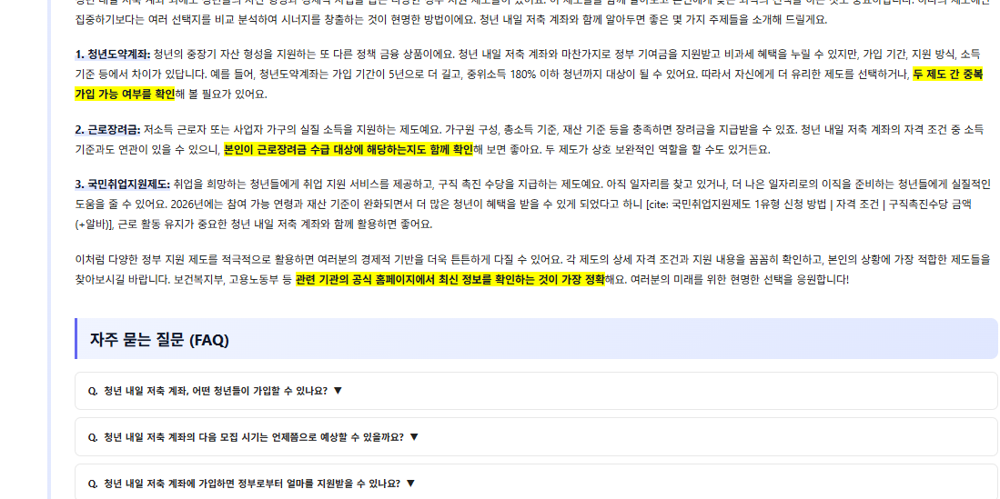

리더스 키워드 · 블로그 SEO 자동화
자동화인데
사람이 짠 듯
키워드 · 내부링크 · 외부유입
SEO 동선 자동화앱
LEWORD + Better Life Naver + Leadernam Orbit
단순 자동글 생성기가 아닙니다
키워드에서 발행까지
운영 흐름을 정리합니다
키워드
본문
이미지
CTA
발행
실제 최신 앱 화면
세 가지 앱을 한 패키지로


LEWORD 핵심 기능
쓸 만한 키워드를 먼저 찾습니다


Better Life Naver
대기열 · 순차 발행 · 진행률을 확인합니다


Leadernam Orbit · 외부유입
공개 글과 유입 글까지 모바일 친화형으로




거미줄 내부링크 구조
앱에서 세팅하고 Leadernam Orbit 글로 연결합니다


이런 분께 추천드립니다
반복 작업은 줄이고 운영 방향에 집중하세요
무작정 많이 쓰는 것이 아니라, 글이 이어지는 운영 흐름을 만듭니다.
올인원 패키지 안내
3개 앱 모두 포함된 구성입니다
구매 전 확인
검색 노출 · 수익 · 애드센스 승인 · 순위 달성은 보장하지 않습니다.
API 키 · 계정 연동 · 플랫폼 설정이 필요할 수 있습니다.
키워드 찾기부터 발행, 내부링크, 외부유입 글 구성까지 한 번에 정리하세요.